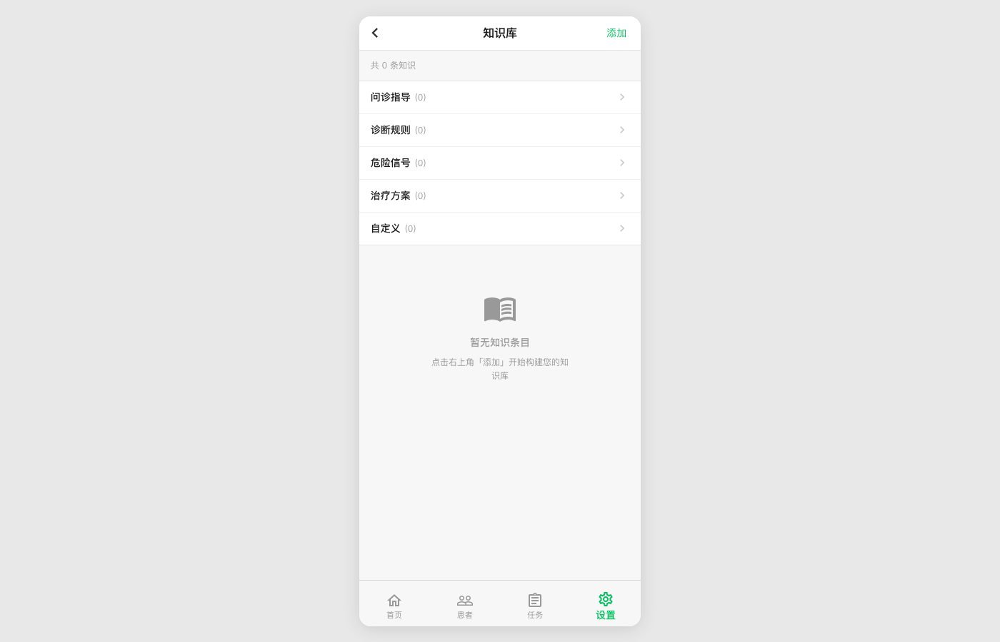
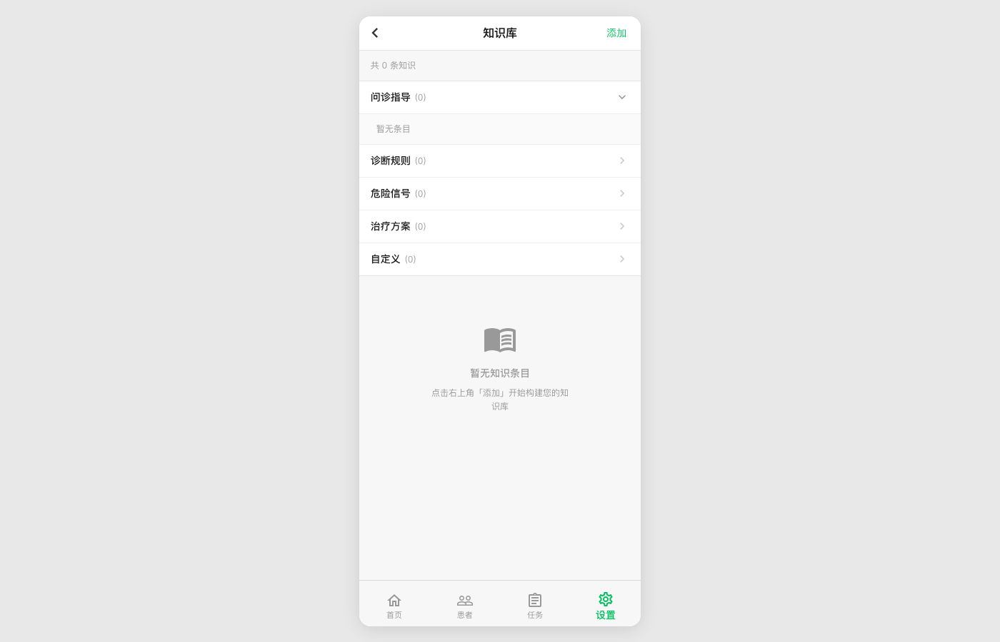
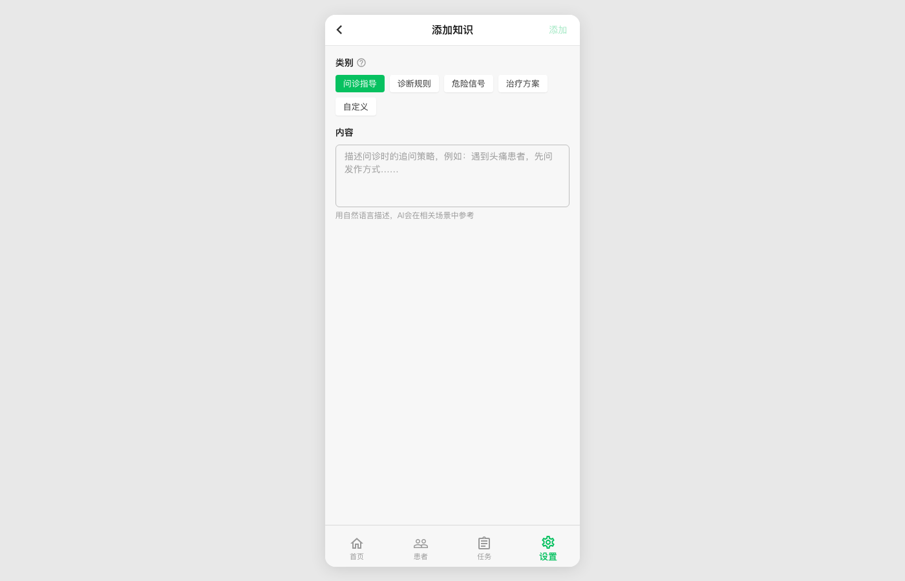
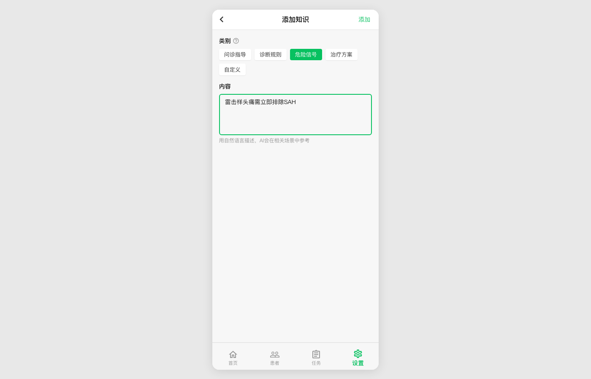
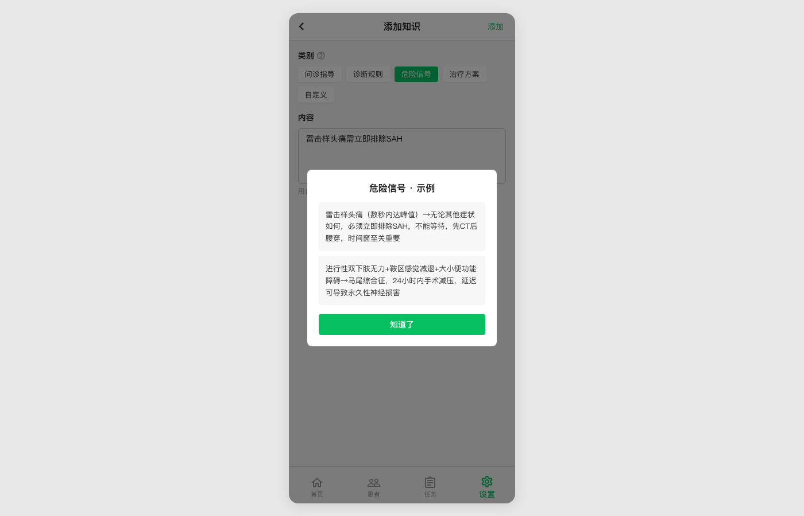
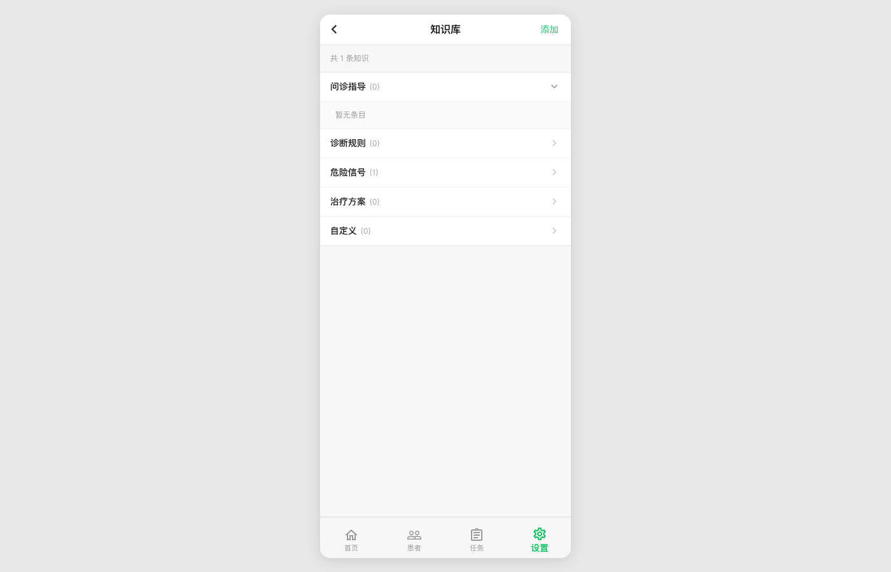
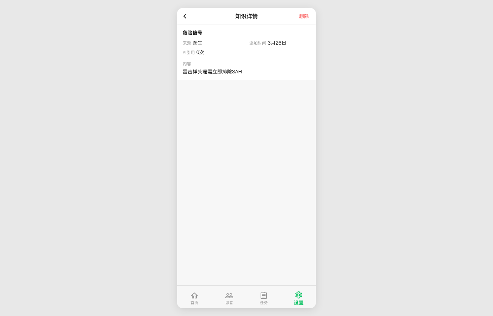
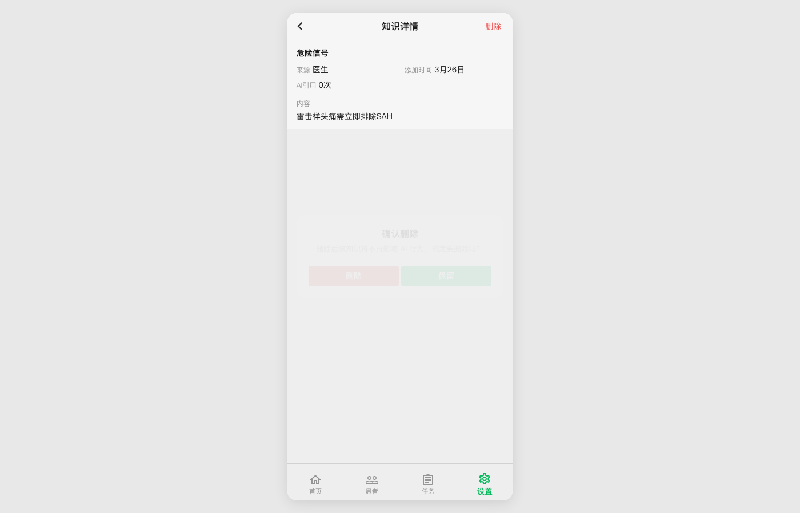
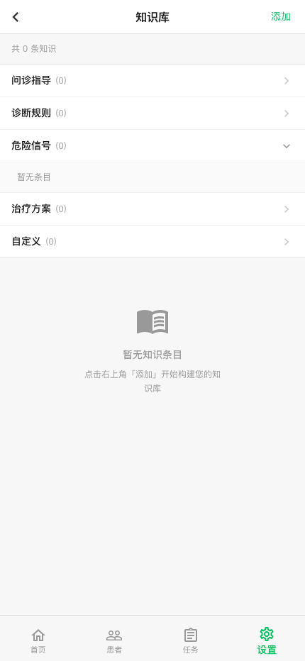
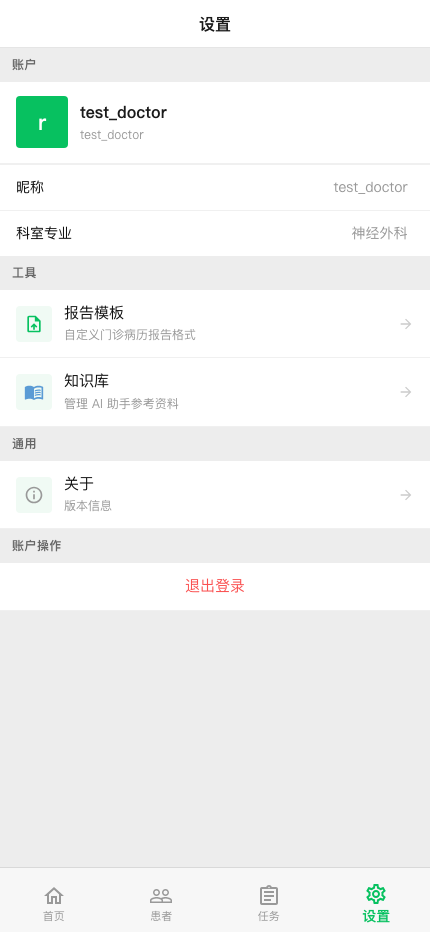

Route: /doctor/settings/knowledge · 2026-03-26 · Mobile viewport 375x812



/knowledge/new



/knowledge/3


/doctor/settingsrole="button", tabIndex, or keyboard handler. Invisible to screen readers. Fix: render as <button> element.onClick but no ARIA attributes. Fix: wrap in IconButton with aria-label="查看示例".Generated 2026-03-26 · doctor-ai-agent · Knowledge page full CRUD walkthrough